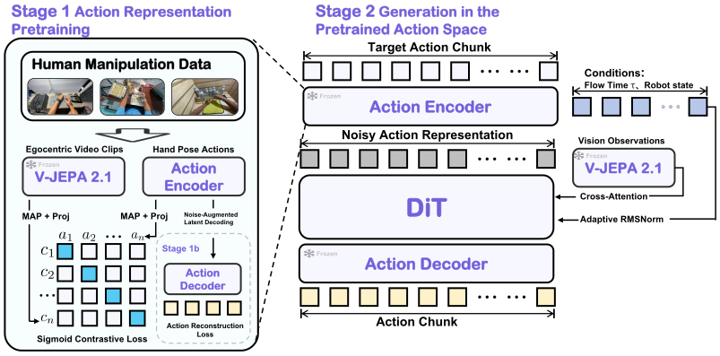

DIRECT LEARNING
Learn both from robot data.
Limited robot demonstrations
01Learn action representations
02Learn task-conditioned generation
The same demonstrations support both learning problems.
Three tasks. Coordinated hands. Watch ARPG in the real world.
Each method is evaluated over 30 trials per task on the physical robot.
| Task | ARPG | π0.5 |
|---|
ARPG improves success on all three evaluated tasks, with the largest gain on pouring coffee beans: 33.3 percentage points.
Learning how actions are represented, and how to generate them for a task.
The same demonstrations support both learning problems.
Human data provides a foundation for action generation.
Separate representation learning from generation.
Bring human motion experience into robot learning.
The same actions can be easier to model in a learned representation. Watch the data change coordinates before the generator learns their structure.
Conceptual visualization
Raw action generation 13.3% → Generation in action representation space 57.8%
DexJoCo overall success · Table 2(a) ↗A decoder converts generated representations into robot actions.
Conceptual animation, not a projection of measured embeddings or a training simulation. A useful representation need not be lower-dimensional or flat. Its benefit depends on the pretraining objective, motion information retained, and decoder quality; the ablation does not establish manifold flattening as the cause.

Generation starts from Gaussian noise. Neither the action encoder nor the V-JEPA video reference runs at inference. The complete active policy has 0.46B parameters; 130M refers only to its generative backbone.
Evaluated on DexJoCo.
Bimanual success rises from 10.1% to 44.7% under multi-task training. This is the clearest gain in the benchmark: coordinating two hands across multiple tasks.
π0.5: 9.05 GB
π0.5: 84.9 ms
π0.5: 3.35B · Backbone: 130M
| Setting | Method | Params (B) | VRAM (GB) | Latency (ms) | Single-arm (%) | Bimanual (%) | Overall (%) |
|---|
Source: Table 1. Baseline benchmark results are reported by DexJoCo. Inference costs follow the measurement configuration in the paper; they are not hardware-independent guarantees.
Can a better pretrained action space improve manipulation without more robot demonstrations or a larger generative backbone? We vary three pretraining dimensions separately.
Figure 4 · Downstream DexJoCo overall success. Data settings are nested subsets. Lines connect evaluated configurations, not a fitted scaling law. Other configurations are held fixed within each comparison.
With robot demonstrations, observations, and the downstream generator fixed, visual alignment produces the strongest representation for generation among the evaluated objectives.
Table 2(a) · DexJoCo overall success (%)
| Final encoder layers | Success (%) |
|---|---|
| 1 | 52.5 |
| 2 | 57.8 |
| 3 | 51.6 |
| Objective | Success (%) |
|---|---|
| Without REPA alignment | 54.85 |
| Without action decoding loss | 56.0 |
| Full objective | 57.8 |
Read the manuscript for complete methods, implementation details, evaluation protocols, and additional analyses.